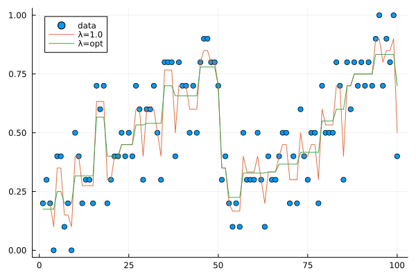

Examples
Standard isotonic regression
julia> using IsoFuns
julia> n = 5
5
julia> x = (1:n)/n + randn(n)
5-element Vector{Float64}:
0.7382449115188521
0.0017480727195733348
1.8535356206530813
0.440015631618591
1.1163182317933293
julia> y = iso(x)
5-element Vector{Float64}:
0.3699964921192127
0.3699964921192127
1.1366231613550006
1.1366231613550006
1.1366231613550006Generalized nearly isotonic regression (binomial)
using Plots
using DistributionsN = 10
n = 100
p = zeros(n)
p[1:50] = range(0.2,0.8,length=50)
p[51:100] = range(0.2,0.8,length=50)
trial = N*ones(n)
success = zeros(n)
for i=1:n
success[i] = rand(Binomial(N,p[i]))
end
x = success./trialy = neariso_Binomial(success,1.0,trial)[1];plot(x,st=:scatter,label="data")
plot!(y,label="λ=1.0")aic_λ,aic_value=IsoFuns.neariso_AIC_Binomial(success,trial)
plot(aic_λ,aic_value,xlabel="λ",ylabel="AIC")
λ_opt = aic_λ[argmin(aic_value)]
z = neariso_Binomial(success,λ_opt,trial)[1]plot(x,st=:scatter,label="data")
plot!(y,label="λ=1.0")
plot!(z,label="λ=opt")